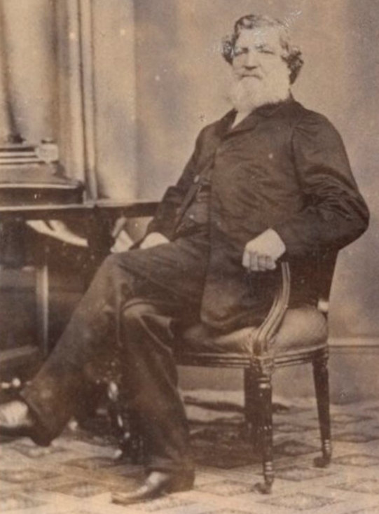
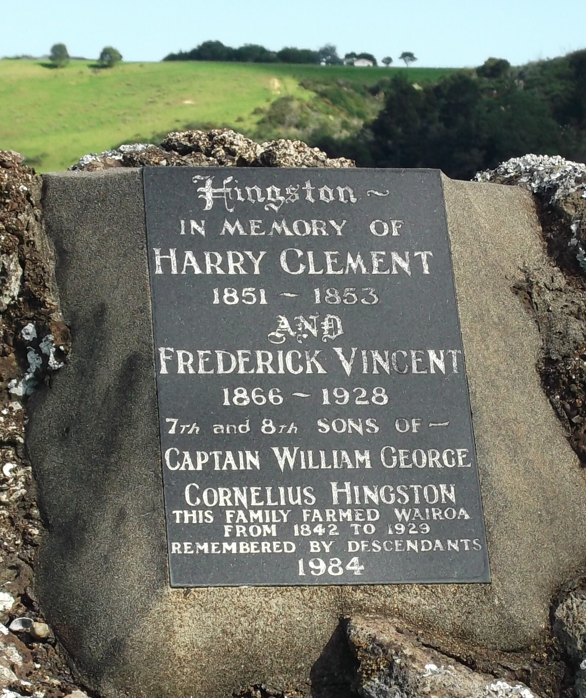

This page has been developed from work done by Peter Hingston on the New Zealand families. That included a different tree, orignally listed here as Tree HY, that we now know is part of Tree HO.
Tree HX includes Peter's own family and is still being worked on. A lot of what follows is based on a collection of family papers held in the Turnbull Library (ref MS-Papers-0043). There is also a useful document by Rhys Richards (RR), "The Crew List of the Whaleship Mary Ann; A link to the Oldest Pakeha Family" Turnbull Library Record, 28, 79-90, which shows that the Hingstons were the white settler family with the longest connection to New Zealand.
The tree starts with HX2. William Hingston and HX1. John Hingston, both of whom were seamen who captained vessels bringing convicts to Australia and New Zealand around 1800. We believe they were brothers, born in Devon, and the most likely candidates are sons of HF#5. George Hingston of Thurlestone and his wife Mary Collins. These relationships are not confirmed and this page may be changed in the future.
2. WILLIAM HINGSTON. We believe that he was possibly the son of HF5. George Hingston and his wife Mary Collins at Thurlestone in Devon, in which case he was baptised there in July 1764. This is not confirmed.
Not a lot is known about William, other than that he was the infamous Captain of the Hillsborough. He has received a bad press, not least in Robert Hughes book The Fatal Shore. She was a full-rigged ship of 764 tons, which was quite large for her time. Previously in the East India Company service, she was taken up for the voyage to New South Wales in late 1798. Although fitted to capacity for an almost record number of 300 prisoners, her spacious 'tween decks were expected to provide comparatively healthy conditions on the voyage. The government was nervous of publicizing the defects of transportation. They put restrictions on 'these low-lifed barbarous masters, to keep honest.' It set up deferred payments--so much per convict embarked, the rest (usually about 25%) when he or she landed in decent health. Masters and surgeons had to get a certificate from the governor when they arrived in Sydney, rating their performance; if this paper commended their 'Assiduity and Humanity,' there would be a bonus from the transport committee when they got back to England. The contractors of the Hillsborough were to get a bonus of £4 10s 6d for every convict landed alive, over and above the £18 per head paid on embarkation.
There are conflicting reports about the circumstances, which may explain why neither Hingston nor the surgeon John Justice William Kunst were punished, even though 95 prisoners died en route and more died soon after arrival in Sydney. Among the surviving prisoners on the voyage was William Noah who kept a graphic account of events, published as A Voyage to Sydney in the Hillsborough, 1798-99. There were doubts that a detailed narrative of a voyage by a convict unfamiliar with the sea would be accurate, but a comparison with the log of a naval vessel, HMS Amphion, that accompanied the ship for part of the way has shown that it is accurate. Noah portrays Hingston as a brutal and unfeeling man who kept the prisoners in irons and barely fed them. On the other hand, an autobiography by Ebenezer Beriah Kelly, an American sailor on the voyage, describes a ship in which the prisoners were sick with fever when they were brought on board and were planning to and take over the ship in the Bay of Biscay. He says they had to be chained and confined below deck to keep order.
It seems it was common for convicts to stowaway on the ship, seemingly with the knowledge of the Captain or crew, before the return journey and vessels were regularly searched before they left Australia. But Hingston did not return with his ship. He purchased the Spanish prize Nostra Senora de Bethlehem, a Java-built snow of 300 tons, and renamed it (wisely as it turned out) Hunter after the then-governor of New South Wales. RR reports that he was working in partnership with the newly emancipated ex-convict and future colonial entrepreneur Simeon Lord. He sailed for Bengal 7 Oct 1799, with whale oil and sealskins but went via the Thames River in New Zealand, where they picked up spars and timber before going to Calcutta. Here they landed 23 convict 'stowaways' and loaded a cargo of spirits for return to Sydney, both in contravention of the East India Company's monopoly. Hingston was arrested but claimed that he was operating under instruction from Governer Hunter and was released. He apparently sold the vessel and disappeared. He is apparently recorded subsequently in London in 1803 and 1804. RR also says that William is recorded as visiting his brother's home in New Zealand but gives no details.
At the moment we have no details about William's earlier or later career and we have no information about whether he had any family, although there are apparently references to a William Hingston and wife Ann who had children christened at Rotherhithe St Mary during late 18th & early 19th centuries.
1. JOHN HINGSTON. We believe that he was possibly the son of HF5. George Hingston and his wife Mary Collins at Thurlestone in Devon, in which case he was baptised there in April 1767. This is not confirmed. A document written by his son William Bruce Hingston (WBH) states that he was born in Devon on 11 March, but with no note about year.
There is some confusion about the name of John's wife. The Turnbull Library records give her name as ELIZABETH MARY BRUCE, and the Bruce name has been passed down in subsequent generations, but parish records show that John married ELIZABETH MARY BROWN at St Mary's, Rotherhithe, on the 2 July 1797. The witnesses were William Bruce and Mary Bruce but it is not clear what relationship they were to the happy couple. WBH said that Elizabeth was born on 12 Aug, but wasn't sure which year. Potential parents for Elizabeth Brown are John Brown and Mary Heveningham who married at St Leonard's, Shoreditch 27 Sep 1774. The solution seems to lie in the marriage by license on 14 Mar 1779 at St. Katherine by the Tower of William Bruce, bachelor, and Mary Brown of the parish of Saint Mary Rotherhithe, widow. We also know that Elizabeth died at 50 Alfred Street, Poplar, Middlesex, 17 Aug 1840, widow of a captain, aged 65 - cause of death: "the visitation of God", in which case she would have been born 1775.
So it seems likely that Elizabeth was born a Brown, the legal name she used at her marriage, but would have been still an infant when her mother remarried; there may well have been other children of this second marriage and it would be common for all the children to use the name Bruce.
According to family tradition John was a sea captain and owner of whalers including the 235 ton London whaleship Elizabeth & Mary, carrying 24 men and 10 guns, first reported in New Zealand in March 1805 and then in Sydney Sept/Oct 1805.
John returned to Sydney from London in the Speke with 97 female convicts. On 20 Nov 1808 The Sydney Gazette reported that the ship arrived on 16th having departed England with 97 female prisoners 18th May. "All prisoners healthy, one lost on the passage out. Passengers included Captain Porteous, Lieutenant Oxley, Mr. Harris. The healthy and cleanly state in which the prisoners from the Speke were landed is a strong proof of the care and humanity with which they were treated during the voyage". On the voyage out it seems that John had some comfort. According to Dell Paton (ndpaton@bigpond.com), one of the female convicts on the Speke was MARGARET THOMAS, who was “assigned to” John Hingston, master (according to her Ticket of Leave). In 1809 she had his child. Dell Paton has written a poem about Margaret (Our Convict Maid). In the three early Australian censuses, Margaret Thomas is listed as a servant in the household of John Douglas who married her 15 year-old daughter, Elizabeth Hingston. That John did not hang around but returned to England.
In Jan or Feb 1809 – the Speke, Captain John Hingston, arrived in the Bay of Islands where he had chief Te Pahi flogged for not being able to produce a stolen axe, and was again in Sydney in Sep 1809 with whale oil. Later, in Nov 1809, the crew of the Boyd were massacred and eaten in Whangaroa Harbour, and the Speke, under Captain John Hingston, was one of six ships to take part in the revenge-fuelled attack on Te Pahi’s island in the Bay of Islands towards the end of March 1810. Speke had been in the fisheries before joining Atlanta, Inspector, Diana, Perseverance, and New Zealander in the mistaken and deadly attack to avenge the burning of the Boyd. Two weeks after the attack, in which 60 innocent people died, Speke set sail for England in company with Atlanta and Inspector.
Sydney Gazette and NSW Advertiser reported on 28 Apr 1810. "This day arrived the Perseverance from the Bay of Islands, with spars. Passenger Mr. Mason, late officer of the Speke, Captain Hingston; to whom we are indebted for the following details:- Colonel Foveaux and Lieutenant Finucane, left the Experiment at New Zealand, and shipped for England on board the Speke; on account of her superior accommodations, and sailed on Sunday the 15th instant. At the time the Perseverance, Speke, and Experiment lay in the Bay of Islands were also there the Diana, Parker; Inspector, Walker; and Atalanta, Captain Morrison; who received intelligence from a young native woman of the destruction of the Boyd, and massacre attending that unfortunate event, and likewise that four Europeans, of what country unknown, were held prisoners there, the only names that could be made out being Brown, Cook, Anthony, and Harry. Upon receipt of which later information the Captains, accompanied by a party of seamen, penetrated into the interior to the distance of 50 miles and upwards in search of the captives, which unfortunately proved unsuccessful. Upon their landing at Tippunah, the district of Tippahee, they were opposed by a large body of natives; who in their determination to resist their approach fired on the party, and killed one man, a seaman belonging to the Inspector, whose loss was much regretted by Captain Walker; after which provocation however, a sharp skirmish ensued, in which 16 or 18 natives were killed, but happily no other European hurt. In this contest Tippahee is stated to have been wounded in the neck and breast, but whether mortally or not was not ascertained. Mr Finucane accompanied the party, which he commanded with equal spirit and forbearance, not permitting a single discharge to take place that was not actually necessary to the resistance of assault; and the conduct of the party was highly applauded by the Colonel, who bestowed on Lieutenant Finucane, the Captains, and their people, the most satisfactory Eulogiums. Prince Matyra, here known by the name of Jackey Mytye, who was taken to England by Governor King, and returned here in the Porpoise under the immediate protection of Captain Porteus and Lieutenant Oxley, is reported to have been killed by his father in a paroxyom of rage. The young native woman already mentioned to have given the foregoing information being no longer safe from the vengeance of the chiefs, arrived by the Perseverance, recommended by Colonel Foveaux to the protection of His Excellency the Governor in Chief.—This vessel also brings Boyd's longboat, as a further confirmation of the doleful accounts already received of that vessel and her ill-fated crew and passengers; and as a further demonstration of the horrible treachery practised by Tippahee for the accomplishment of his detestible project, Mr. Mason informs us that that infamous chief breakfasted on board with Captain Thompson on the very morning of the massacre."
In 1810 he was sailing around the north of N.Z. whaling when he was requested to help escort Governor William Bligh home to England. He was to accompany the ships, Porpoise, Dromedary and the Hindustan. Bligh was an excellent seaman and a wily character hence the need for four ships as escort.
The children of John and Elzabeth are listed below. It is notable that they had two sons called William, both living at the same time; perhaps one of them used his middle name. [IGI has 4 of the 6 as Kingston. Probably all born in Poplar.]

RR says that the Turnbull papers show that WGCH made a cruise in the Sarah and Elizabeth well before 1830, and surmises that he was in the crew of the whaler Mary Ann when she visited the Bay of Islands in April 1826, and also in Feb 1828 when Capt Gardner in the same ship sheltered the painter Augustus Earle and his party from tribal fighting.
WGCH was Captaining the Admiral Cockburn from 1831 to 1835 and regularly using the Bay of Islands; a major trade developed with the native Maori people providing provisions for visiting whaling vessels and was the site of the first European settlement. Later he became the owner and master of the whaler Mary Anne using the Bay of Islands as his base. On 27 May 1837 he purchased Onewhero block (estimated 1600 acres) for £150, and on 2 Oct 1838 he purchased the Otahowai block (est 500 acres) for £12/12/-, also Motupapa Island (est 4 acres) for £12 and Paitaia block (est. 500 acres) for £30 - the location of the vessel in the Bay of Islands on these dates borne out by crew entries in the ship's muster roll. He married secondly JANE ELIZABETH FEATHERSTON 3 Dec 1840 Paihia St Pauls, Bay of Islands, NZ. She was the daughter of Captain Featherstone. She died 24 Jul 1867 aged 53 and is buried at Paihia St Pauls next to her husband. It is assumed that WGCH met his wife-to-be during one of his visits to the area, she having been resident in the district with her mother, stepfather and younger sister since 1831.
In the two years from late 1838 and late 1840 he sold the Mary Anne and returned to the Bay of Islands. He built a house at Te Wairoa on the Onewhero block (to a Canadian design with a steeply pitched roof to shed snow, generating much hilarity locally) and commenced farming, initially in horse-breeding, supposedly the first horse farm in NZ. Cattle, sheep, goats and turkeys followed. He died 19 Sep 1891 Te Wairoa, Bay of Islands, NZ and is buried on the farm there. RR reckons that the Hingstons are the oldest Pakeha (white settler) family in New Zealand.

Some of the information below comes from Frances Stuart, the g.g.grandaughter of WGCH.
The children of William George Cornelius and Jane Hingston were:
4. JOHN WRIGHT HINGSTON born 7 Aug 1842 (a twin) m. MATILDA EDMONDS. He was known as "Wright".
The children of John Wright and Matilda were:-5. MURRAY HINGSTON was born 16 Jul 1847.
He had three children:-
6. WILLIAM BRUCE HINGSTON was born 12 Jun 1849. He had one child.
7. JOHN MURRAY HINGSTON married REBECCA McROBERTS. They had the following children:-
8. FREDERICK CORNELIUS HINGSTON. He had three daughters:-
9. ARTHUR CONRAD HINGSTON. He had four children:-
10. GEORGE LANGLEY HINGSTON. He had three children:-